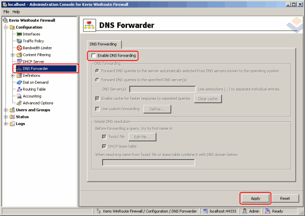
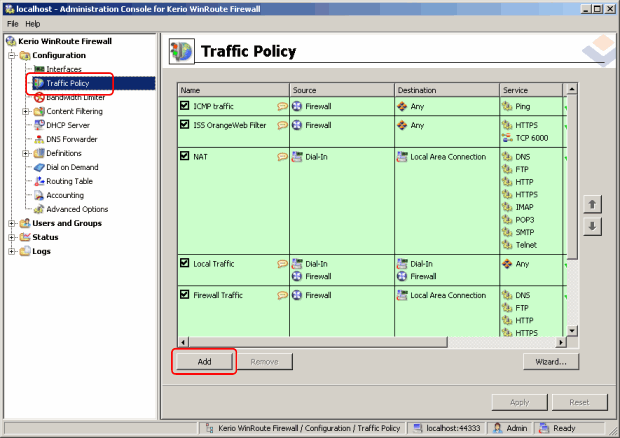
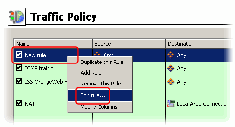
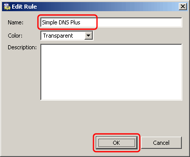
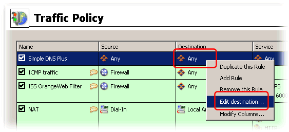
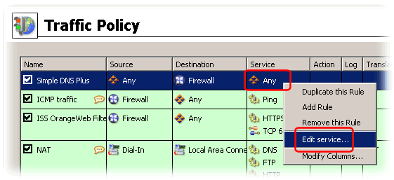
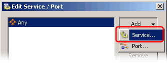
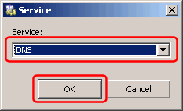
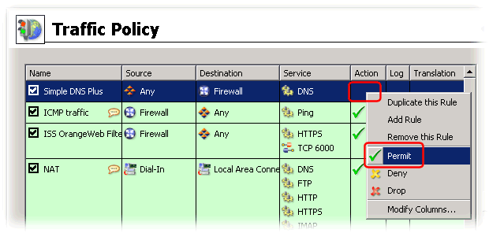

(WinRoute is a product from Kerio Technologies - www.kerio.com)
WinRoute Firewall a DNS Forwarder used to relay DNS requests from clients behind the proxy server.
If WinRoute Firewall and Simple DNS Plus are running on the same computer, this will conflict as both programs are trying to use port 53.
You can disable the DNS Forwarder function in WinRoute Firewall. Most likely you won't need this because Simple DNS Plus provides this functionality directly.
To disable the DNS Forwarder in WinRoute Firewall, in the WinRoute Firewall administration console, under "Configuration", select "DNS Forwarder" in the left list, then un-check "Enable DNS forwarding", and click the "Apply" button:

After changing this setting, you should be able to start the DNS service in Simple DNS Plus (select "Start Server" from the "File" menu).
WinRoute Firewall also includes firewall functionality which by default will block DNS requests from the Internet.
If you want to host Internet domain names with Simple DNS Plus, you need to add the following configuration in WinRoute Firewall to allow this.
In the WinRoute Firewall administration console, under "Configuration", select "Traffic Policy" in the left list, then click the "Add" button to add a new item:

Right-click the cell of the "New rule" line and the "Name" column, and select "Edit rule" from the popup menu:

Change the name to "Simple DNS Plus" and click the "OK" button:

Right-click on the "Destination" cell, and select "Edit destination..." from the popup menu:

In the "Edit Destination" dialog, click the "Add" button and select "Firewall host", and then click the "OK" button:
Right-click on the "Service" cell, and select "Edit service..." from the popup menu:

In the "Edit Service / Port" dialog, click the "Add" button and select "Service...":

In the "Service" dialog, select "DNS" and click the OK button, and the OK in the previous dialog:

Right-click on the "Action" cell, and select "Permit" from the popup menu:

Click the "Apply" button: